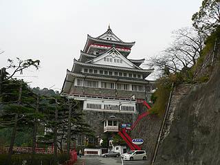
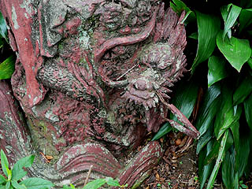

熱海城；2/静岡県熱海市
すっかり駐車場でかなり時間を使ってしまった。
城への入場料を払わずにこんなに楽しめるとは、日本で一番エキサイティングな駐車場と言っていいかも知れない。

浅野作品もたくさん堪能させてもらったし、もうコレで帰ってもいいのだが折角だから城に登ってみる。
刑事「…どんな事でもいいんです。事件当時何か変った事はありませんでしたか？」
目撃者「そういえば、駐車場に車を停めてお城にも行かずに駐車場をウロウロして帰っていった男がいます…」
子供「そういえばへんなオジチャンが踊ってたよ…」
母親「そうそう、××××っぽい人！」
刑事「で、その車の車種とナンバーは？！」
…てな事は御免こうむりたいので。
ここは私が御幼少の頃に来たはずなのだが、中の様子はまっっっっったく記憶にない。
で、赤い階段をのぼり、城の正面に向かう。
っと、いきなり恵比寿、大黒の幸福タッグじゃないっすか。
コレもまた浅野作品なのだろうか？
オリジナリティが出しにくいモチーフだけに、作者の特定は難しい。
顔がドングリ目玉だったりすると一気に浅野係数が高まるんですけど…
恵比寿、大黒さんの近くには三体の仏像が並んでいた。
コレはかなり浅野係数が高い。特に中央の阿弥陀サマの顔はかなりキテる。
光背の裏にはそれぞれ1972年4月8日と1973年4月8日の日付が入っていた。
お釈迦サマの誕生日に二年連続で送られた仏像。
何か深い意味があるのだろうか？西暦なのも含めて。
こちらの大日サマの光背は関ヶ原の戦観音に似ている。
この犬は…わかんないです。

で、熱海城の正面入り口に到着。
もちろん浅野師の作ったという日本一の鯱がそびえている。
コンクリでなく鋳造製だという。
熱海城の説明書きがあったが、雄が9尺8寸（約3メートル）雌が9尺6寸（2.9メートル）だそうで、一年間かかって制作されたそうだ。
鯱が日本一だ、ということをことのほか強調してある。
浅野師、いい仕事しましたね。
で、城に入ろうとすると、ここにも浅野作品と思しきコンクリ像が…
弁天サマと布袋サマ。

宝船に乗った七福神。
こちらのチェックポイントとしては七福神の内の恵比寿大黒と先ほどの恵比寿大黒の比較である。
…う〜ん。凄く似てると思うんですけど…どうでしょう？
ちなみに船の下の波の形は先程の波涛達磨大師と同じですね。
先程の十二神将もそうだがこのような「群像」にこそ浅野作品の真髄が現れているように思える。
ホラ、この七福神も一体一体はインパクトが弱いけど、7人全体から発するオーラは独特の浅野臭がするでしょ？
弁天サマの足元の龍と宝船の先端にある龍。浅野師は数多くの龍を手掛けている。十八番といってもいいのではなかろうか。

さて。
やっと入城である。
入ると最初に目に飛び込んで来るのは鯱のレプリカ。
ええと、カタチとか材質とかは全然違うのだが大きさは大体一緒なんだと思います。勿論またがり可。
レプリカが作られるとは。余程日本一の鯱が熱海城主に気に入られたのだろう。
奥には戦国武将の甲冑コーナー。
普通の観光客としてはかなりヌルめの展示かと思えるが、最近変わり兜がマイブームの私としては結構うれしかったです。
昭和の名城らしく1階からエレベーターに乗って一気に最上階である6階へ。
周辺の眺めは素晴らしい。しかし気になるのは眼下の廃墟っぽいところばかり。
しかもそんな中にこんな素敵な方々の姿がチラホラ。他にも何体かコンクリ像がありました。
展望階から徐々に下がってくる。途中、すんごい昔のパネルや世界遺産の写真の展示などがあったような気がしたが、見なかったことにしておきます。
で、2階の日本城郭資料館。
ここには何とマッチ棒で作られた日本の名城が並んでいる。

城マニアの方々にとっては大興奮の展示、かとも思ったがもしかしたら逆に不評なのかもしれない。
ちなみに私自身は城に対してそんなに熱い情熱を持っているわけではなく、一般の成人男子並み程度です。
まあ、血糖値の上昇率でいえばメガマック5個分です。え、結構好き者だって？
どっちかっていうとマッチ棒で大仏とか作ってくれた方が個人的には盛り上がるのだが、致し方ない。お城だから。
しかしよく見ると実に細かい仕事をされている。
製作は土田さんという左官業を営まれていた方だという。職人さんには結構この手の趣味人が多いように思う。
そいえばウチの近所の大工さんはどこかの五重塔の模型を造っていたが、結局完成せずに亡くなっちゃったなあ。
石垣までマッチを一本一本重ねて作っているところに執念のようなものを感じる。
ちなみに力作名古屋城は3万9千本のマッチ棒を使ってるそうで。
もちろん最後は熱海城の模型が展示されていた。
築城当時と思われる写真。先ほどの十二神将が肩を寄せ合ってたのは画面左下のバスが停まっている辺り。
で、地下の展示室へ。
ここには西洋の名画（のレプリカ）や浮世絵（のレプリカ）などが展示されている。
恐らく崇高な理念があると考えられるが、凡人の私には展示の意味すら理解できませんでした。
奥のほうは18歳未満入場不可の春画が並んでました…
で、さらに意味不明の古代遺跡。
この城自体が半分廃墟みたいになっている事を考えると、凄まじい自虐ネタなのか、とも思ったが展示のコンセプトはもっと崇高なところにあるに違いない。もちろん凡人の私が知るよしもない。
まあ、こんなもんか、と、帰ろうとした時、階段の近くで恵比寿、大黒像を見かけた。
お、これはまたしても浅野作品では。
先ほどの城の外に置かれていた布袋恵比寿と形や表情がよく似ている。
左側にいる恵比寿さんの台座の左脇に注目して欲しい。
岩のような台座の真ん中を四角くくり抜いて、そこに奉納者の名前や像のタイトルを刻み込むのは今まで幾つかの浅野作品で見ている手法だ。
これはもしかして裏側に浅野師の銘が刻まれているかもしれないぞ！
壁との隙間に無理矢理頭を突っ込んで見てみたら、台座の背後には裏書がされており、このように刻まれていた
「昭和四十九年十一月 八十四才 祥雲作」
おおお、ついに浅野祥雲師の銘を見つけたり〜！
感動しつつ天を見上げると、そこには一枚の紙が掲げられている。
「この恵比寿像は名古屋市在住の浅野祥雲氏の作品です。浅野祥雲氏は当熱海城の天守閣の金の大鯱を鋳造製作しました。」
…って書いてある。何だ最初から見とけば良かった。
見れば大黒さんの上にも同様の説明書きがあった。
84才といえば浅野師が亡くなる数年前、最晩年といっていい時期の作品である。
コンクリ人生50年の集大成、しっかり堪能させていただきましたぞよ！
ここから私の妄想宇宙にお付き合いいただくことになる。
以下の3つの大黒像に着目してみよう。
まずは中央は今見た城内の大黒、左が城外にいた大黒、で右が入口近くにいた七福神の大黒。
ハイ、３体とも同じ作者のものですね。
で、そのうちの一体（中央）は浅野作品であることが確定。
ということはこの三体の大黒さんは浅野作品ということになります。
ここまではイイですか？
で、右側の大黒さんがいた七福神の中に毘沙門天がいるんですが、コレが駐車場にいた十二神将像にそっくり。
さらに七福神が乗っている宝船の波はこれまた駐車場にあった達磨大師の波にそっくり。
したがって ”城内の恵比寿大黒＝城外の恵比寿大黒＝入口の七福神＝十二神将” となり、ついでに
”城内の恵比寿大黒＝城外の恵比寿大黒＝入口の七福神＝達磨大師＝んで、色が一緒だからその他諸々も！”
…と、まあ、壮大かつ強引な三段論法により、ここ、熱海城にあるコンクリ像のほとんどが浅野作品であり、熱海城は鯱だけでなく浅野作品が大量に眠る一大聖地であったのだ！ということが証明され…たと思うんですけど、どんなもんでしょ？
中京を根城にしていた浅野祥雲帝国が箱根の関の手前まで勢力圏を伸ばしていた、という事だ。
っつーか関、越えちゃって欲しかったんですけど。いや、もしかしたらどこか人知れず越えているかも…
ひとまず私の中では結論めいたモノが出たので勝手にシメということで
よよよい よよよい よよよいよい あ、目出てぇ〜な〜。（ｂｙ伝七捕物帳）
2007.3.
珍寺大道場 HOME